Tourism: Colonial Era Attractions: During the colonial
period, Ghana, then known as the Gold Coast, attracted European
traders and explorers drawn by its wealth of gold and other natural
resources.
Cultural Tourism: After independence, Ghana promoted its rich
cultural heritage to attract tourists. Historic sites such as the
Cape Coast Castle and Elmina Castle, which played significant roles
in the transatlantic slave trade, became key attractions.br
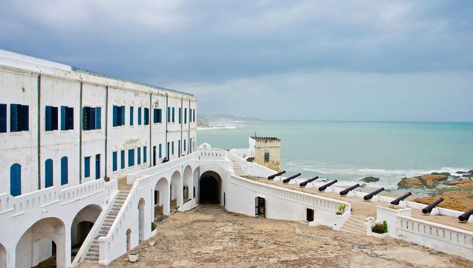
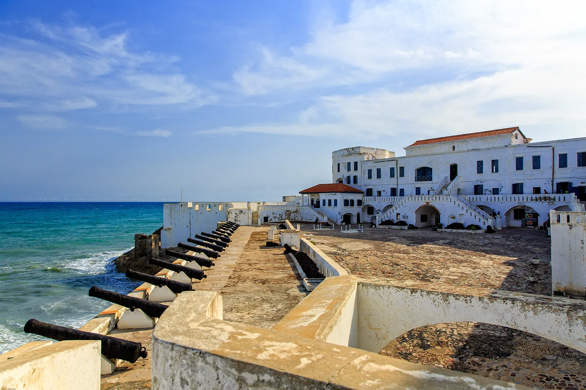
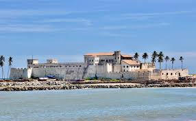
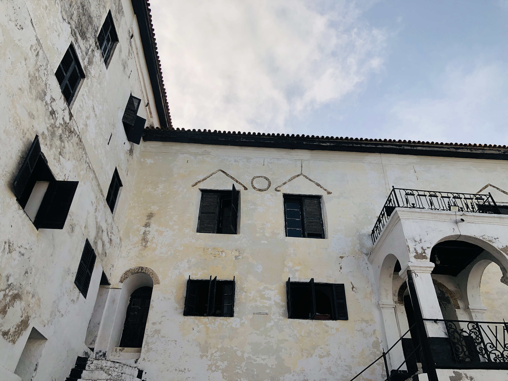
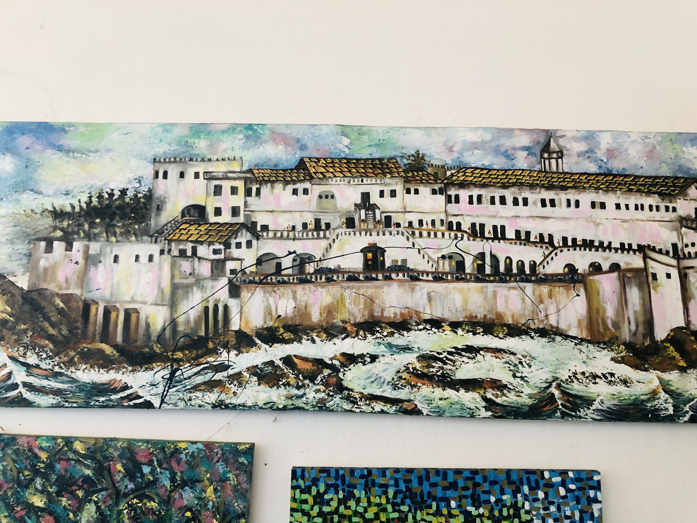
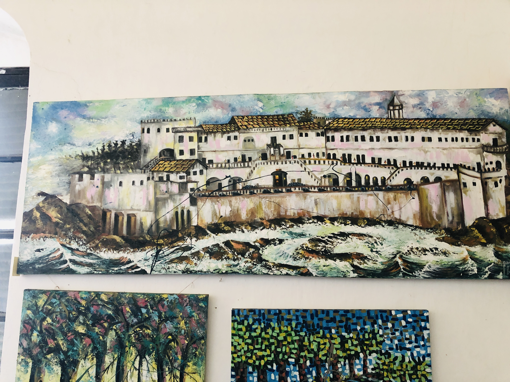
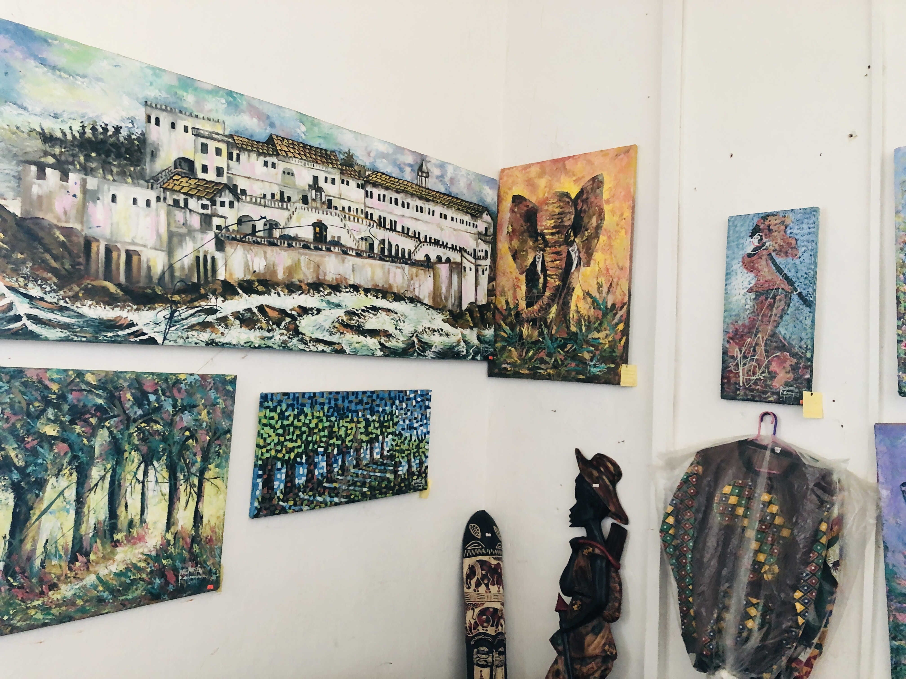
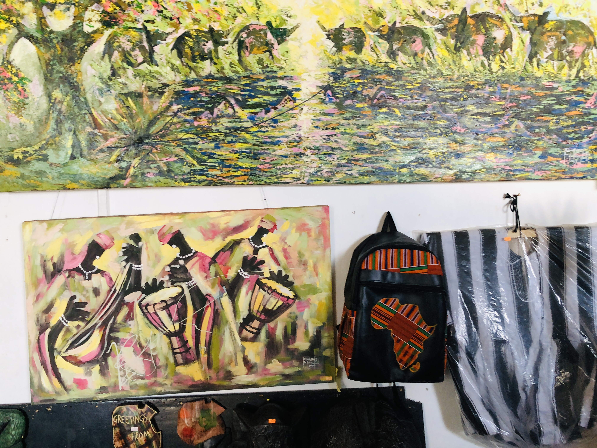
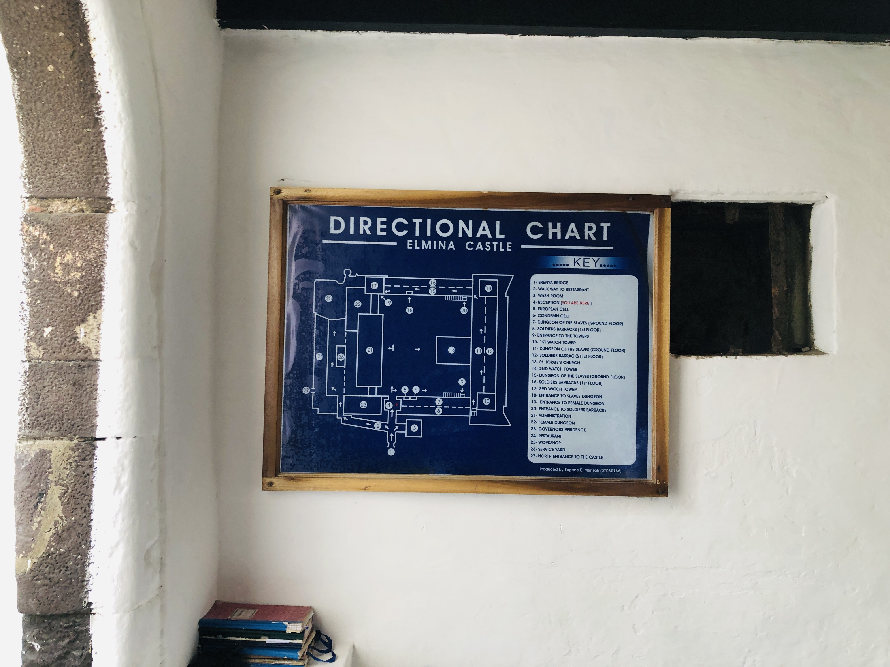
Ecotourism: Ghana's diverse ecosystems, including rainforests,
savannahs, and coastal areas, offer opportunities for ecotourism.
National parks like Mole National Park, home to diverse wildlife,
attract nature enthusiasts.
 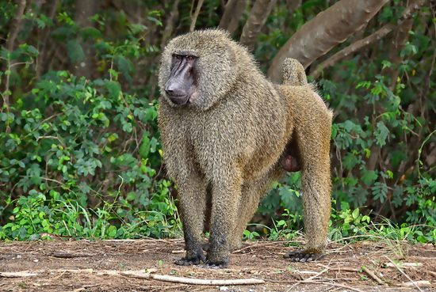
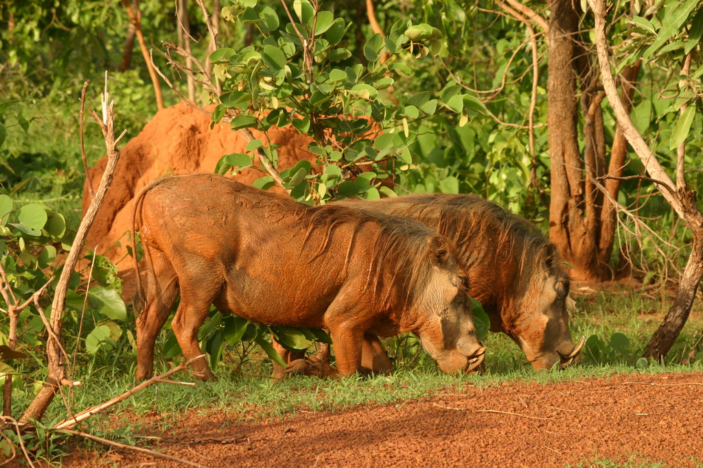
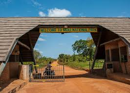
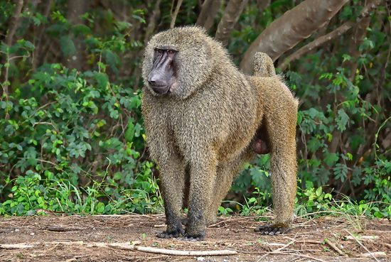
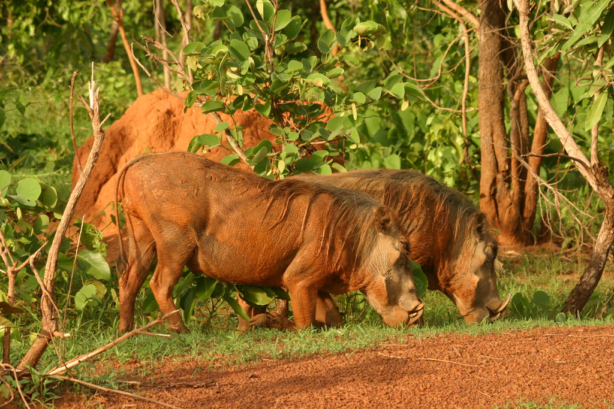
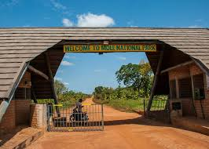
Cuisine: Traditional Dishes: Ghanaian cuisine is known for its
flavorful and diverse dishes. Staples include fufu (pounded cassava or
yam), banku (fermented corn and cassava dough), and jollof rice
(spiced rice with tomatoes and vegetables). Street Food Culture:
Street food vendors offer a variety of snacks such as kelewele (spicy
fried plantains), waakye (rice and beans), and bofrot (sweet fried
dough balls), providing visitors with a taste of local flavors.
Seafood: Given its extensive coastline, seafood plays a prominent role
in Ghanaian cuisine. Fresh fish, shrimp, and lobster are commonly
enjoyed, especially in coastal communities.
Beaches and Beautiful Sites:
Golden Coastline:
Ghana boasts picturesque beaches along its Atlantic coastline,
offering opportunities for relaxation, water sports, and scenic views.
Popular beach destinations include Busua Beach, Kokrobite Beach, and
Ada Foah. Cape Three Points: Located at the southernmost tip of Ghana,
Cape Three Points is known for its stunning beaches and serene
atmosphere. It offers breathtaking views of the Atlantic Ocean and is
a favorite spot for sunset watching.
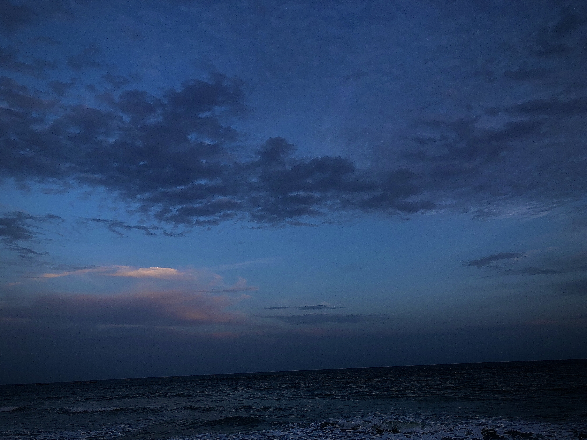
Volta Region: The Volta Region is renowned for its natural
beauty, including the Wli Waterfalls, the highest waterfall in West
Africa, and the Tafi Atome Monkey Sanctuary, where visitors can
interact with Mona monkeys in their natural habitat.
Conclusion: Ghana's history with tourism, cuisine, beaches, and
beautiful sites is a testament to its diverse cultural heritage and
natural landscapes. From historic landmarks to culinary delights and
scenic coastal areas, Ghana offers a rich tapestry of experiences for
travelers seeking adventure, relaxation, and cultural immersion.